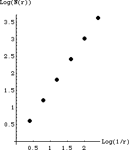

4a On the left is the completed table, on the right is the graph.
r
N(r)
1/r
Log(1/r)
Log(N(r))
.4
4
2.5
0.398
0.60
.42
16
6.25
0.796
1.204
.43
43
15.625
1.194
1.806
.44
44
39.063
1.592
2.408
.45
45
97.656
1.990
3.010
.46
46
244.14
2.388
3.612

The points appear to fall along a straight line; the slope of this line is the box-counting dimension. We measure
dim = (3.612 - 0.60)/(2.388 - .398) = 1.513.